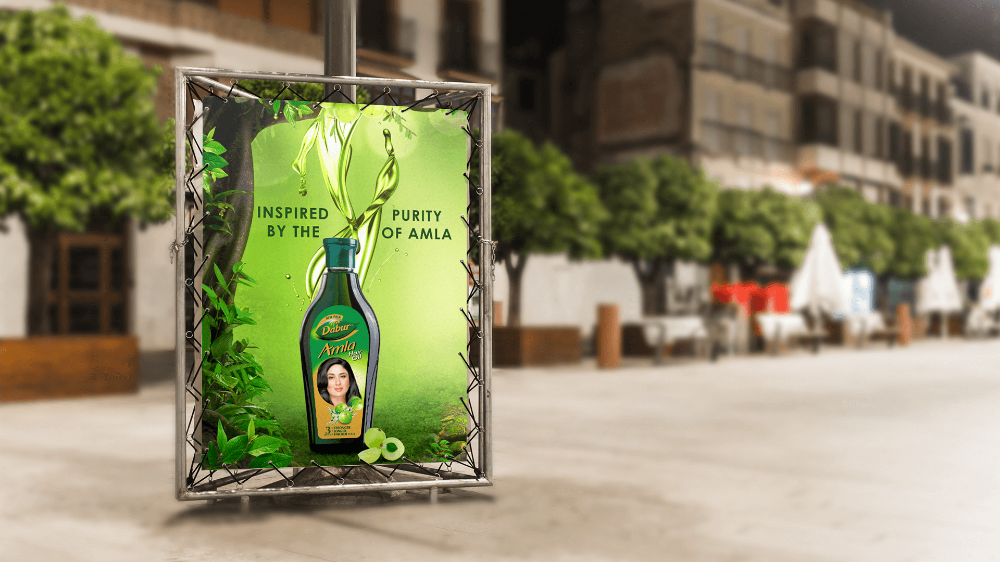
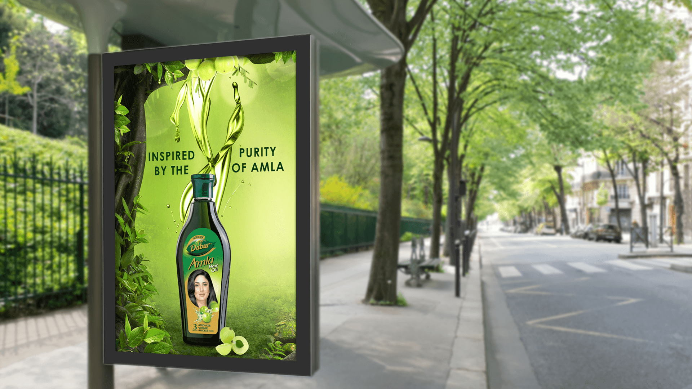

The message had to resolve quickly in busy outdoor environments without reducing the product to another conventional pack shot.
← Back to workPurity takes shape.
Dabur Amla · Clip-on Print
Purity takes shape.
Strength steps out.

Project overview
A familiar ingredient.
A more visible expression.
Dabur Amla Hair Oil is positioned around the natural goodness of amla and stronger, longer, thicker-looking hair.
The clip-on direction translated that established product promise into an outdoor idea designed to be understood at a glance: the bottle as anchor, amla as proof and flowing oil as the distinctive visual gesture.
- Product
- Hair Oil
- Ingredient
- Amla
- Expression
- Natural + Strong
- Application
- Outdoor Print
The communication challenge
Make nature immediate.
Make the pack unmistakable.
The amla ingredient, dark-green bottle and hair-strength story needed to work as one clear and ownable visual system.
The creative device
Oil becomes hair.
Hair becomes the headline.
A fluid strand rises from the bottle and behaves like healthy, flowing hair—turning a product benefit into a recognisable silhouette.
Fresh greens, amla fruit and botanical detail establish ingredient purity, while the dark bottle creates the contrast needed for quick pack recognition.
Built for the street
Three signals.
One fast read.
- 01
Product
A single centred bottle gives the composition a clear visual anchor.
- 02
Ingredient
Amla fruit and leaves communicate the natural source before copy is read.
- 03
Benefit
The upward oil form turns strength and flow into a memorable graphic cue.
The work in context
One idea.
Two outdoor rhythms.
Each supplied application is shown once and kept fully visible, preserving the complete clip-on construction and surrounding environment.


The outcome
Ingredient made visible.
Benefit made memorable.
The print system compresses a rich hair-care story into a quick outdoor sequence: see the bottle, recognise amla, understand strength.
Immediate recognition
High pack contrast helps the product register from a distance.
Ownable movement
The flowing oil form gives the campaign a distinctive visual signature.
Context flexibility
The core idea remains clear across day, night and changing streetscapes.
Rooted in amla.Designed to stand out.
Need an outdoor idea that reads in a second?